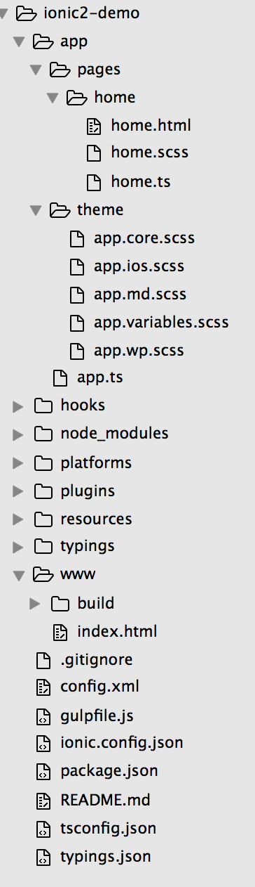

Ionic2中文教程（五）项目结构初识
在之前的教程中，我们已经做好了准备工作，包括：预备知识、环境搭建和如何调试项目。接下来，让我们开始的app开发之旅吧！
创建一个空项目
项目名称你可随意起，添加ios、android平台，以便你随时进行调试1
2
3$ ionic start ionic2-demo blank --v2 --ts
$ ionic platform add ios
$ ionic platform add android
运行我们的项目尝尝鲜：1
$ ionic serve
你的项目应该在浏览器中显示出来了！
项目结构简介
打开你的项目1
$ cd ionic2-demo
目录结构如下图所示：

接下来我们先简单了解一下这些文件都是干什么的（按重要顺序排序）
app 文件夹
这个文件夹包含：
- pages 文件夹
- theme 文件夹
- app.ts 文件
pages 文件夹
包含你的app所有的页面组件，每个组件在这个目录下有一个单独的文件夹，如home文件夹。其中home.ts是定义这个组件的ts文件，home.html是home组件的模板，home.scss是组件的样式定义。
theme文件夹
包含所有的app全局样式定义的.scss文件，注意全局样式定义是在整个app中使用的，而每个组件的样式还是在该组件的scss文件中定义。
app.ts
这个文件定义了你的app的根组件。注意 TypeScript文件的后缀为.ts而不是.js，这里的问题是，我们的浏览器并不知道怎么读取ts文件，所以后面ionic会将ts文件编译成js文件。
www 文件夹
ionic会将我们在app文件中的各个组件的源代码编译，编译后的文件就放在这个文件夹里。index.html 是你app的入口。所以，除了index.html，不要修改这个文件夹下的其他文件，因为你任何修改的文件，都会在下次编译时重新生成，你修改的内容也就没有了~
如果你需要用到图片，那么你的路径应该是：1
<img src="www/images/test.jpg">
你的.scss文件会在www/build/scc文件夹里面。如果在.scss文件中用到图片相对路径，应该是：1
../../images/test/jpg
resources 文件夹
这里放app启动界面（splash screens）和一些图标
config.xml
这个文件定义cordova如何编译生成你的ios、android安装包，偶尔修改即可
package.json
定义了你各个依赖库及其版本，你只需要修改Ionic的版本来进行升级即可。
hooks 文件夹
hooks 是构建程序时用到的，你可以在这里添加一些scripts文件。
node_modules、platform、plugins文件夹
这三个文件夹你不需要修改，知道用途即可：node_modules存放依赖库文件，platform存放各个平台相关文件，plugins存放各个插件相关文件。这些文件在你执行ionic命令时都会自动生成的。
其他文件
其他的咱们也都不需要主动修改啦~
说明
ionic2中文教程是我对ionic2的学习经验总结，分享出来希望能借此让以后接触ionic2的小伙伴迅速高效的学习使用这个框架。如果此文章对你有帮助，请按下方分享按钮将网站地址分享给更多的小伙伴，未经本人同意不得转载。如果你有问题需要我的帮助或发现错误请根据博客最下方邮件链接与本人联系。